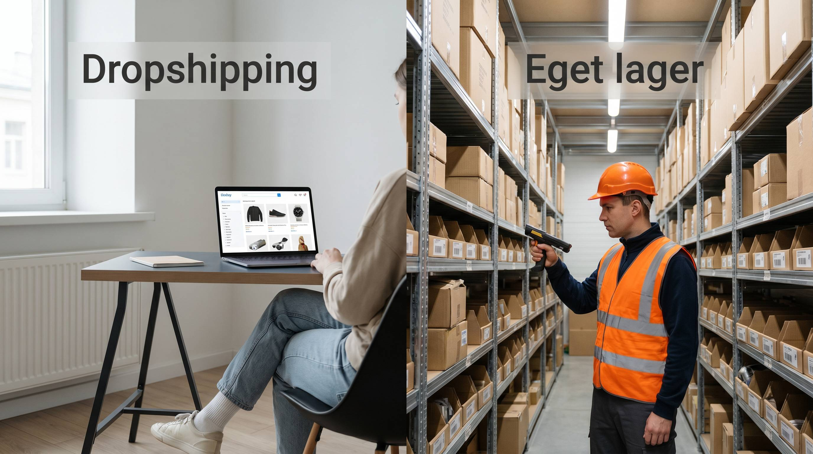

Dropshipping saelges som den nemme vej ind i eCommerce. Intet lager, ingen kapital bundet, ingen lagerhaandtering. Det er korrekt. Men det er kun halvdelen af historien.
Den anden halvdel handler om avance, kontrol og hvad der sker når din leverandoer laver fejl. Og det gør de.
Her er en konkret sammenligning ved 200 ordrer om maaneden, saa du kan traffe en informeret beslutning.
👉 SmartPack understotter baade eget lager og hybridmodeller med dropshipping-integration. Se mulighederne
Bundlinjesammenligningen ved 200 ordrer/maaned
Lad os bruge et konkret eksempel: en webshop der saelger produkter med en gennemsnitlig ordrevaerdi på 450 kr.
| Parameter | Dropshipping | Eget lager |
|---|---|---|
| Bruttoavance pr. ordre | 90-130 kr. | 150-200 kr. |
| Lageromkostning pr. ordre | 0 kr. | 25-45 kr. |
| Nettobidrag pr. ordre | 90-130 kr. | 105-175 kr. |
| Kontrol over levering | Lav | Hoj |
| Skalerbarhed | Hoj | Middel (kræver investering) |
Hvad dropshipping-tallene ikke viser
Bruttoavancen på dropshipping ser acceptabel ud i tabellen. Men der er skjulte omkostninger:
- Højere fejlrate. Når du ikke kontrollerer plukning og pakning, stiger fejlraten typisk med faktor 2-4. Hver fejl koster 200-600 kr. at haandtere.
- Laengere leveringstid. Kunder der venter laengere klager mere og returnerer mere. Returraterne ved dropshipping er typisk 20-40% højere end ved eget lager.
- Ingen brandoplevelse. Kunden får leverandoerens emballage, ikke din. Det paavikrer genkøbsraten.
Hvornår er dropshipping stadig det rigtige valg?
Dropshipping giver mening når: du tester nye produktkategorier uden at binde kapital, du har et supplement-sortiment der ikke saelger nok til at være på eget lager, eller du er i den tidlige fase og ikke har kapital til lagerbeholdning.
Det er ikke en permanent model for en serios webshop. Det er en bro.